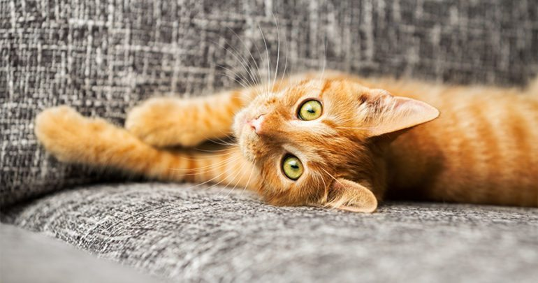
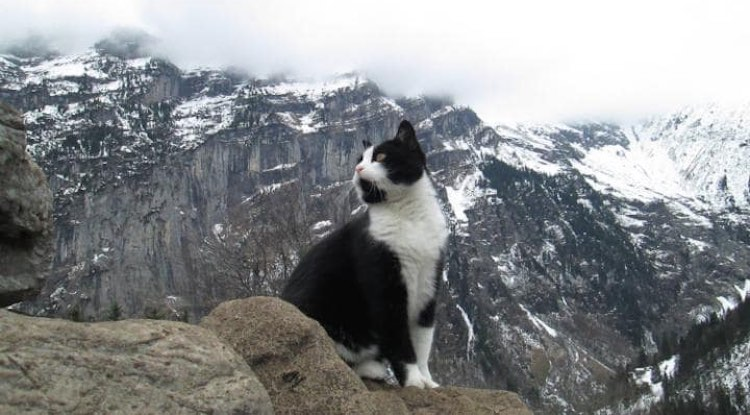

Cats ruled the year!

For our eighth installment in the 12 Top Stories of 2017, we bring you the cats that dominated the year. These meow meows had us smiling, cooing, and crying at our screens with their stories of survival, information about their species, and by just being adorable.
Also making the list of top cat posts on Wide Open Pets, are some good tips and advice on how to care for your feline friend.
Here are our best cat stories of 2017.
Mysterious Cat Rescues Injured Tourist From Swiss Mountains

An injured Hungarian tourist would have had to spend a frosty night in the mountains if it hadn’t been for this friendly little feline leading him to safety.
The hiker had sprained his ankle on one of the many mountain trails of the Bernese Oberland in Gimmelwald, Switzerland. The path that led back to his hostel had just been closed, leaving him lost and stranded in the Alps.
That’s when a black and white cat crossed his path.
 About cats
About cats